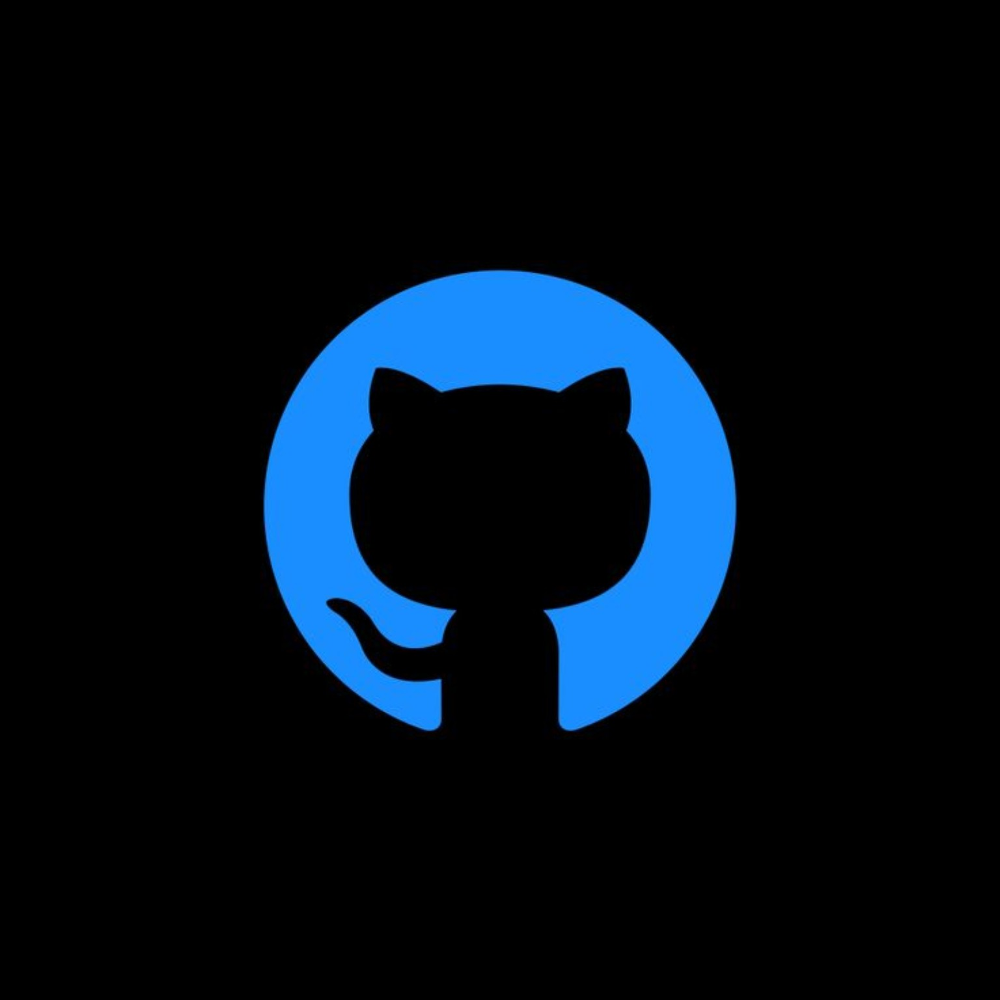

Scroll to explore
01 About
I write about AI, RWA and emerging technology, research emerging systems and build things while figuring out how they work.
My work sits around AI, Web3, technical writing, research, storytelling and the occasional experiment that probably started with “I wonder if I can build this.”
My philosophy:
Curiosity is what drives my work.
I ask questions, research and get hands-on where I can. I write to make what I learn easier to understand, and build to see where theory meets reality. I'm comfortable figuring things out along the way and changing my mind when the evidence gives me a reason to.
Making sure my readers understand what I'm sharing is a priority for me.
My content
Tech
- AI models
- Large language models
- RWA (Real World Assets)
- Technical writing
- Crypto/blockchain
- Open-source software
02 Selected works
The Geek’s Archive
[ Selected works ]Ming-Image-0.1-Design
Pexo ai
REAL FINANCE DECODED
THE DUNNING-KRUGER EFFECT
THE PSYCHOLOGY OF FEAR AND GREED INDEX
WTF IS CHEETO
THE HIDDEN COST OF TOKENIZATION
THE PEASANT, THE PAINTING, AND THE PRICE OF REALITY
TWO SIDEs OF ONE TRADE: Understanding Note Systems Through Yield and Protection
REAL Finance
ALL ABOUT TREPA
THE YELLOWCATZ ALIGNED
03 Collaborations
Projects I’ve Worked With
04 Audience
Audience
Impressions · Past 3 monthsUnited States
Select a country to locate it on the globe.
06 Contact
Socials

GitHub